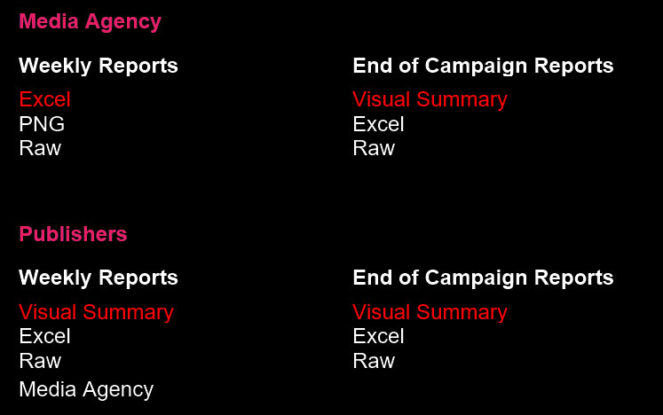

deliver metrics and analytics to PLAYGROUND XYZ customers about their ads and campaigns.
deliver high-level insights to Publishers about ads and campaigns running on their sites
access and generate required analytics in-house to use for customer support and sales.
Why?
Business problem: Goals? Needs? What is not being met?
Why?
Reporting workfload at PLAYGROUND XYZ will increase exponentially as client-base is growing fast
Customers are not getting all the info they need, when they need it (on demand, real-time updates)
Business Objectives
Facilitate the exponential growth of the company
Provide world-class end-to-end service
Build trust through transparency
Business Objectives
(continued)
Improve our company reputation
In-house product improvement through better insights
Success?
Scot’s time no longer spent reporting so he can concentrate on company development
Reporting requests shift to support requests...
... and support requets reduce overtime.
Positive feedback from users, testimonials
Percentage of time spent reporting from COO and Ops Coordinators (currenntly 40% of SCot's time goes on reporting)
How do we do this?
How do we figure out what to do?
Research.
Research Goals
We will clearly identify who the primary users are and the context in which they will be using our reporting system.
We will determine the key metrics and analytics required for reporting on PLAYGROUND XYZ ads and campaigns by our various users, in order or priority.
We will describe the various user workflows within which our reporting data is used, to understand how we might best integrate our data reporting into these workflows.
Research so far
Internal Experience + Assumptions
Scot Lidell (+ Rob Hall, Jono Mullins)
User Survey
Small sample, 16 respondents, 90% complete
Internal Experience + Assumptions
Primary users + Business
Coordinator, Media Agency
Mobile Sales Agent, Publisher
Survey results
Opened the door to engaging our customers/users in our design process (contributing suggestions, feedback, ongoing user testing)
Survey results
Danger!
Responses from tiny sample of users
Responses were rushed and incomplete
Questions yielded ambiguosly-phrased answers
Delivery format

Eight requests for automated email as best delivery mechanism.
Not specified whether user configures timing, report content...
Metrics and Dimensions
CTR
Impressions
Viewability / viewable impressions
Clicks (Events)
Device comparison
Unique Reach
Time in View
Spend
% to Goal
Engagement
Placement
Completion (Video)
Location / geography
Variation Day / week
% Delivery
Demographics
Frequency
Conversions per Impression
Other requests
Top and Tail: total clicks as well as separated clicks
Heat map (Location-based or user taps not specified)
More insights and commentary at EOC
Commentary if discrepancy of over 20% (our data and third party)
Summary
Got a few new ideas from our user-base
We are still in a design process ased on best-guess assumptions, internal experiences. Bit risky.
Learning what the problems are but not exactly why they occur. Needs to be documented in context.
Hard to prioritise with total accuracy, based on the info we have
Where to now?
The good news
Anything is probably better than what we are currently. Room for lots of wins.
The risk
Starting in the wrong place due to incorrect assumptions
Missing an important foundational element, creating tech debt